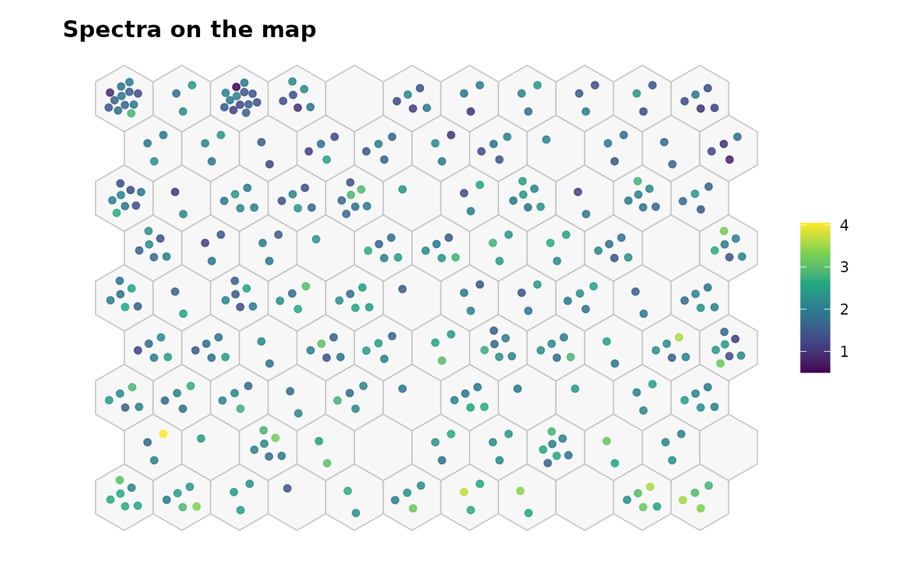
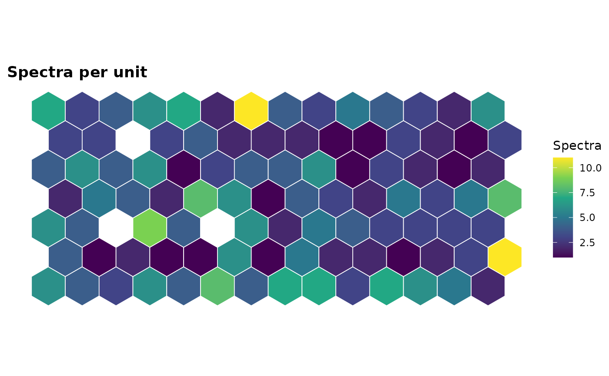

Maps spectra onto a two-dimensional grid of units with a self-organizing map (SOM; Kohonen, 1982), so that similar spectra land on the same or on neighboring units. Each unit holds a prototype (codebook vector), which is itself a spectrum. The map is useful for sorting samples quickly (scrap metals, mineral phases), and it follows nonlinear relations between spectra (matrix effects, self-absorption, changes of the plasma) that a linear projection such as PCA can miss. New spectra are placed on their best-matching unit with predict(), and a large quantization error flags a spectrum that fits no known group.
Arguments
- x
A numeric matrix or data frame of spectra, one per row.
- grid
The numbers of units along the two sides of the map,
c(xdim, ydim). IfNULL(default), chosen from the number of spectra (see details).- topology
"hexagonal"(default) or"rectangular".- epochs
The number of training epochs. Default is 50.
- radius
The radius of the neighborhood kernel (in units) at the first and the last epoch. If
NULL(default),c(max(grid) / 3, 1).- init
"pca"(default) or"random".- center, scale
Logical values: center the variables (
TRUE, default) and scale them to unit variance (FALSE, default) before training.- robust
A logical: down-weight the outlying spectra (
FALSE, default).
Value
An object of class specproc_som, a list with
codebook: the prototypes, one row per unit, in the units ofx;grid: a tibble with theunit, itsrowandcol, and its coordinatesxandyon the map;unit,qe: the best-matching unit and the quantization error of each training spectrum, andweights(withrobust = TRUE);quantization_error,topographic_error: the quality of the map;cutoff: the quantization error beyond which a spectrum is novel;center,scaleand the training settings.
Details
Algorithm. The batch SOM (Kohonen, 2013) is computed in C++. At each
epoch, every spectrum is assigned to its best-matching unit (BMU), the unit
with the closest prototype, and every prototype becomes the mean of the
spectra weighted by a Gaussian kernel of the grid distance between its unit
and their BMU. The radius of the kernel decreases linearly over the
epochs, from radius[1] (a global ordering of the map) to radius[2]
(local fine-tuning). The distances between spectra and prototypes are
computed in one matrix product per epoch, so thousands of channels are
handled quickly.
Initialization. With init = "pca" (default), the prototypes start
on the plane of the first two principal components, spread over two
standard deviations of the scores, with the long side of the grid along
the first component. The training is then deterministic, and the map is
oriented like a PCA score plot. init = "random" starts from randomly
chosen spectra; use set.seed() for reproducibility.
Grid. By default, the map has about \(5\sqrt{n}\) units (Vesanto et
al., 2000), with the ratio of its sides set to the square root of the ratio
of the first two eigenvalues of the data. The "hexagonal" topology gives
each unit six equidistant neighbors, which displays the clusters better
than the four of "rectangular".
Robust SOM. With robust = TRUE, the spectra are weighted at each
epoch by Huber weights of their quantization errors (robustly
standardized, with cut-off \(\sqrt{\chi^2_{1, 0.99}}\)): the outlying
spectra (a misfired shot, a contaminated sample) pull the prototypes
less, as in the robust SOMs of Allende et al. (2004).
Quality and novelty. The mean quantization error measures how well
the prototypes represent the spectra, and the topographic error (the share
of spectra whose two best units are not neighbors) how well the map keeps
the neighborhoods. The quantization errors of the training spectra give a
robust cut-off (the Wilson-Hilferty transformation with the univariate MCD,
as for the orthogonal distances of robpca()): spectra beyond it fit no
unit well, and new spectra beyond it are flagged as novel by
predict().
Stability. The map depends on its grid, radius and initialization. Use
som_stability() to check that the neighborhoods are stable over
resampled data.
References
Kohonen, T. (1982). Self-organized formation of topologically correct feature maps. Biological Cybernetics, 43(1):59-69.
Kohonen, T. (2013). Essentials of the self-organizing map. Neural Networks, 37:52-65.
Vesanto, J., Himberg, J., Alhoniemi, E., Parhankangas, J. (2000). SOM Toolbox for Matlab 5. Report A57, Helsinki University of Technology.
Allende, H., Moreno, S., Rogel, C., Salas, R. (2004). Robust self-organizing maps. In Progress in Pattern Recognition, Image Analysis and Applications (CIARP 2004), Lecture Notes in Computer Science 3287:179-186.
Examples
data(forageLIBS)
spectra <- forageLIBS[-(1:14)]
fit <- som(spectra)
fit
#> Self-organizing map
#>
#> Spectra: 368
#> Variables: 7152
#> Grid: 14 x 7 (hexagonal, 98 units)
#> Units with spectra: 95
#> Quantization error: 26330
#> Topographic error: 0.00815
#> Beyond the cut-off: 47
# where the potassium-rich samples are, and how many samples per unit
plot_som(fit, type = "mapping", colour = forageLIBS$K)

plot_som(fit, type = "counts")
